바이브코딩 입문
바이브코딩이란
1부 커리큘럼
바이브코딩의 유래
내가 「바이브코딩」이라고 부르는 새로운 코딩 방식이 있다. 느낌(vibe)에 완전히 몸을 맡기고, AI의 빠른 발전을 받아들이고, 코드가 있다는 사실조차 잊는 방식이다.
Andrej Karpathy · X · 2025-02-02 · 원문 「There's a new kind of coding I call “vibe coding”…」바이브코딩 사례
원시인과 사과
코드의 저장과 실행
 ?1
?1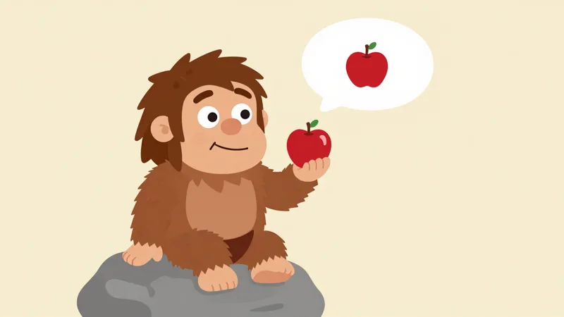
이건 사과 · 먹는 것2 사과다!3
사과다!3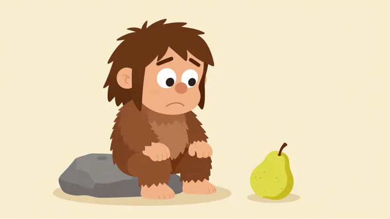
?4프로그래밍 언어의 발전
mov x1, #0 add x1, x1, x2 … 38줄
for n in range(1, 101):
total += n「1부터 100까지 더해 화면에 보여 줘」
어셈블리어 코드
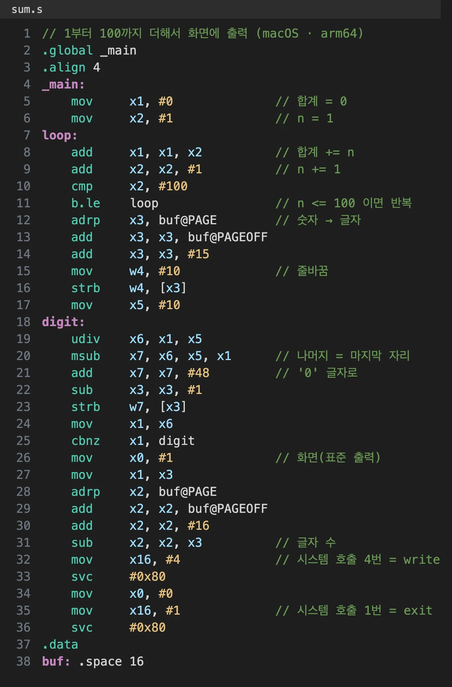
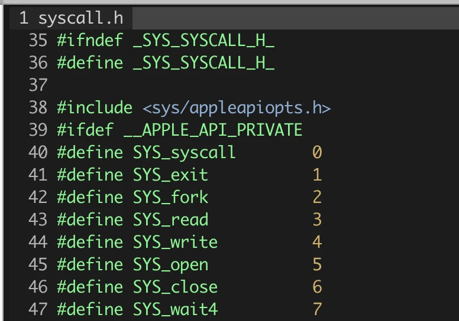
고급 언어 코드 · Python
total = 0
for n in range(1, 101):
total += n
print(total)$ python3 sum.py
5050자연어 요청
1부터 100까지 더한 값을 화면에 보여 줘
Python 코드를 만들어 실행했다.
결과 · 5050
AI 코딩 도구의 변화
위임의 한계

우유 6통 사건
알고리즘
라면 끓이기 알고리즘
로그인 순서도 · 피드백 전
로그인 순서도 · 피드백 후
사람과 AI의 역할
LLM
- 질문 읽기
- 답 쓰기
- 코드를 글로 쓰기
- 파일 열기 · 저장
- 코드 실행
- 결과 화면 확인
도구가 필요한 이유
LLM과 코딩 에이전트
 생각만1
생각만1 작업 · 확인3
작업 · 확인3경비 정산 비유

에이전트 루프
바이브코딩의 가능성과 한계
- ✓화면 1~3개 웹 페이지할 일 · 투표 · 체크리스트
- ✓업무 보조 도구계산기 · 자료 정리
- ✓시제품아이디어 시연용 화면
- ✕돈 · 개인정보 처리 서비스전문 보안 점검 필요
- ✕동시 사용자가 많은 서비스서버 · DB 설계 필요
- ✕코드 확인 없는 운영장애 원인 추적 어려움
요청과 결과
도구 · 실습 환경
1부 커리큘럼
1부 실습 도구
 Claude Code아이디어 · 기획서 · 개발 계획 · 앱 코드
Claude Code아이디어 · 기획서 · 개발 계획 · 앱 코드Claude와 Claude Code
Claudeclaude.ai · 대화형Claude CodeVS Code 확장 · 위임형Claude Code 사용 환경
VS Code
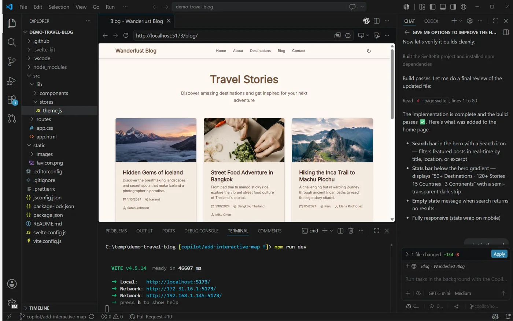
확장 프로그램

Claude Code 확장 설치

Claude Code 기본 조작
실습 1-2 ① 순서
- 1claude.ai 가입 · 요금제 확인
- 2github.com 가입
- 3vercel.com → GitHub 로 계속하기
- 4VS Code 설치 → 확장 「Claude Code」
- 5workspace/mini_notion 폴더 만들기 → VS Code 로 열기
- 세 사이트 모두 로그인된 상태
- VS Code 에 mini_notion 폴더가 열림
실습 1-2 ① · 1단계 Claude 가입 · 요금제
실습 1-2 ① · 2단계 GitHub 가입
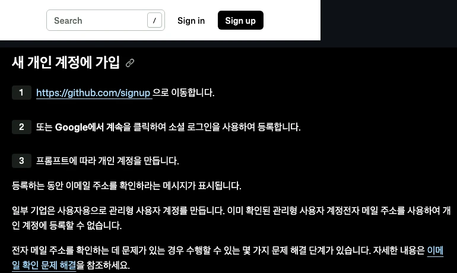
실습 1-2 ① · 3단계 Vercel 가입
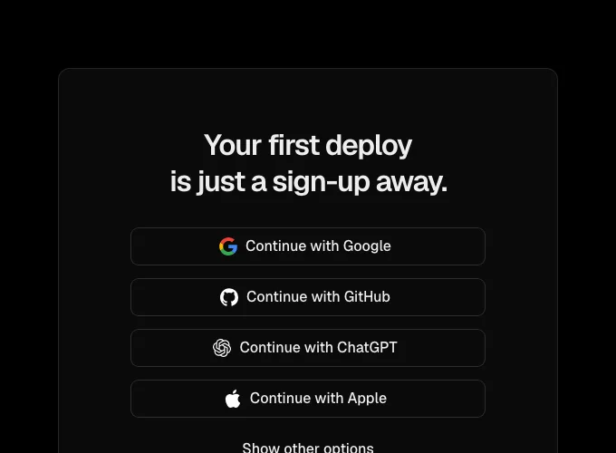
실습 1-2 ① · 4단계 VS Code 설치
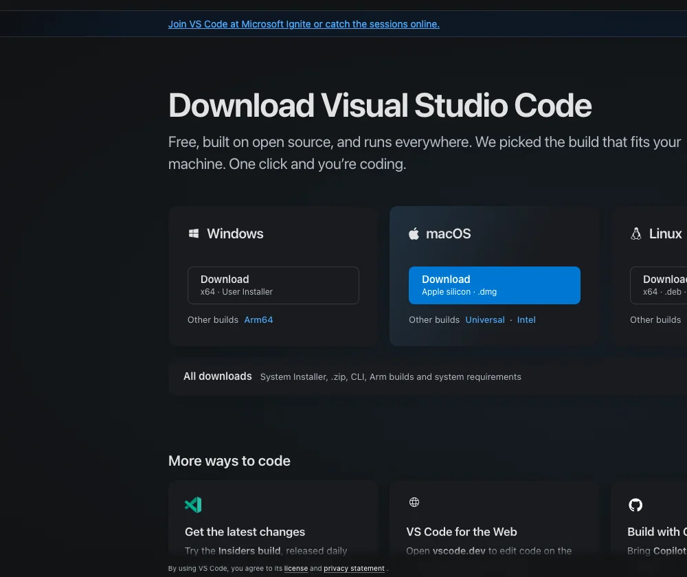
실습 1-2 ① · 4단계 Claude Code 확장
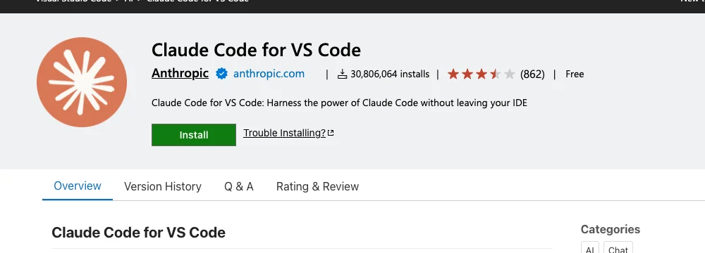
실습 1-2 ① · 5단계 작업 폴더 만들기 · 열기
실습 1-2 ② 순서
- 1폴더 신뢰 창 → Yes
- 2Spark 아이콘 → Claude Code 열기 · 로그인
- 3「이 폴더에 뭐가 있는지 알려 줘」 요청 · 답 읽기
- Claude Code 가 폴더 내용을 답함
- 파일이 새로 생기지 않음
실습 1-2 ② 요청 항목
실습 1-2 ② · 1단계 폴더 신뢰
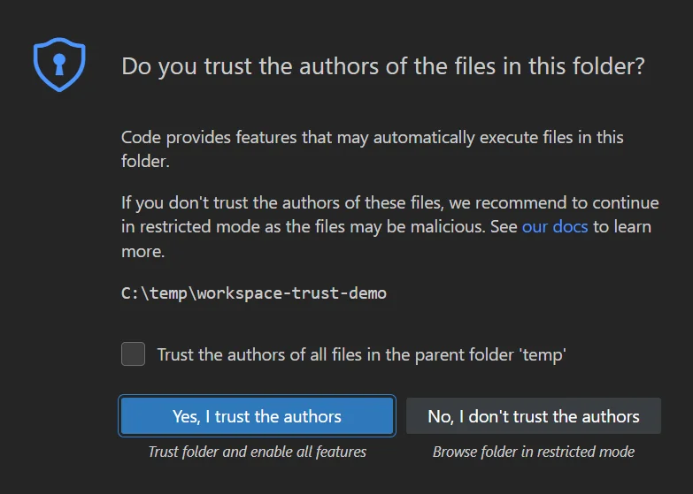
실습 1-2 ② · 2단계 Claude Code 열기 · 로그인
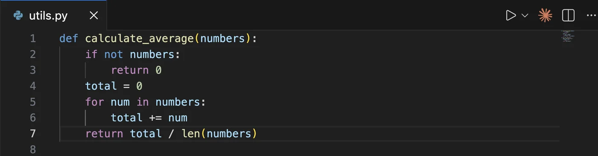
실습 1-2 ② · 3단계 첫 요청 · 답 읽기
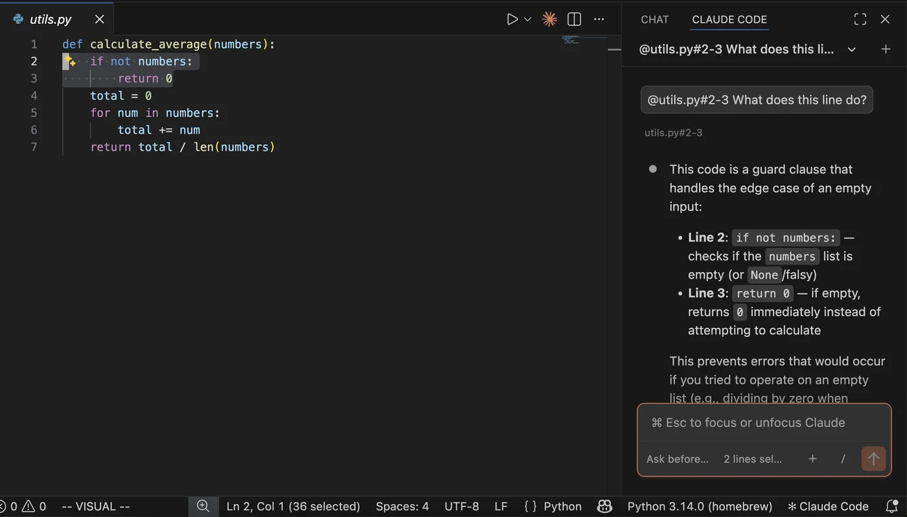
실습 1-2 ③ 순서
- 1「미니 노션 만들어 줘」 한 줄 요청
- 2파일 만들기 승인
- 3결과 보고 읽기
- 4브라우저로 결과 보기
- 5생각과 비교 · 폴더는 그대로
- 브라우저에서 앱이 열림
- 내 생각과 다른 곳 세 가지
실습 1-2 ③ · 1단계 한 줄 요청
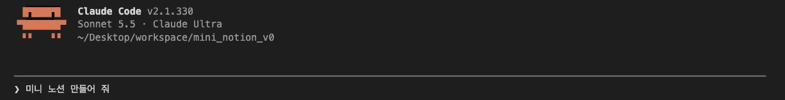
실습 1-2 ③ · 2단계 파일 만들기 승인
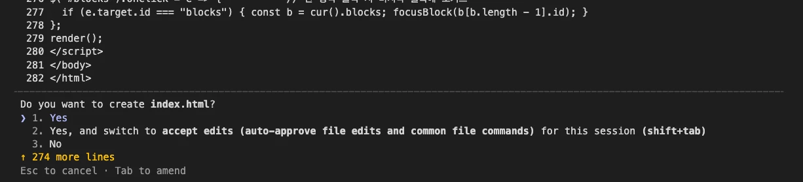
실습 1-2 ③ · 3단계 결과 보고 읽기
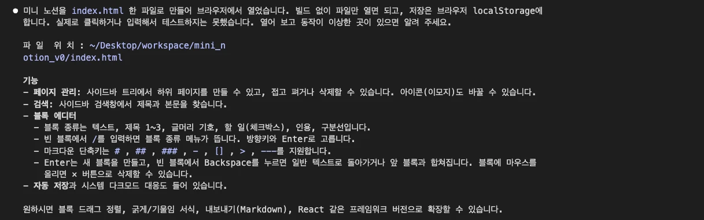
실습 1-2 ③ · 4단계 브라우저로 보기
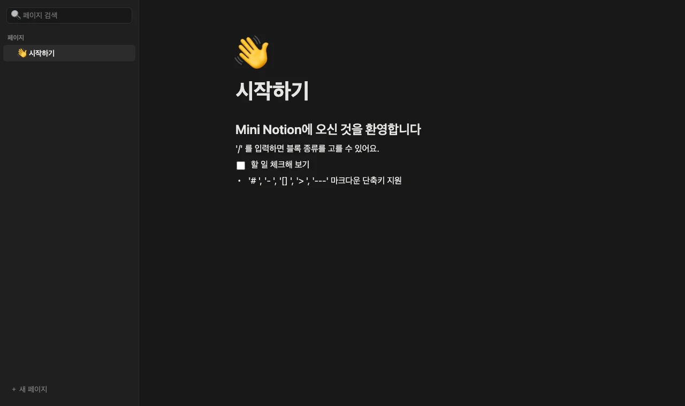
결과물별 실행 방법
한 줄 요청 결과
기획서 작성
1부 커리큘럼
모호한 요청과 구체적 요청

IT 기업 조직 구성
IT 기업의 개발 흐름
미니 노션 완성 화면
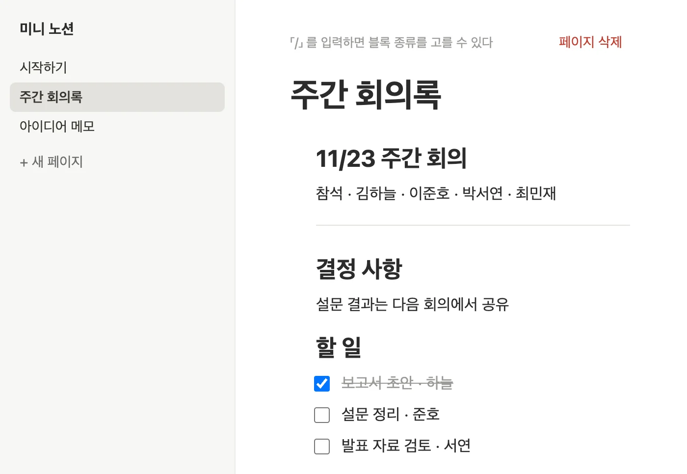
미니 노션 기능
기획서

기획서 인터뷰
좋은 답 ① 하루 시나리오
좋은 답 ② 실제 메모
구분선
좋은 답 ③ 손그림
좋은 답 ④ 「~하면 ~된다」 문장
먼저 묻기 모드와 역할 메모
기획자 페르소나
# 기획자
- 듣는 사람은 IT 를 모르는 직장인이다
- 질문은 한 번에 하나 · 일상 말로 · 예시 답을 같이 보여 준다
- 흐린 답은 「최근에 실제로 있었던 일」로 다시 묻는다
- 메모 · 그림은 복사 · 사진으로 달라고 먼저 요청한다
- 다 물으면 기획서.md 로 정리한다 · 내가 안 한 말은 쓰지 않는다
- 기획서.md 칸: 문제점 · 이용자 · 사용 장면 · 예시 데이터 · 화면 스케치 · 확인 문장기획자 말투 비교
기획자 페르소나 대화 예시
기획자.md 대로 미니 노션 기획서를 같이 쓰자
요즘 회의록 때문에 곤란했던 일 하나만 들려주세요.
예: 지난주 회의록을 못 찾아 다시 물어봤다
메모가 여기저기 흩어져서 불편해
조금만 더 구체적으로요. 최근에 실제로 있었던 일 하나만요.
예: 언제 · 무엇을 찾다가 · 어떻게 됐는지
지난주 회의록이 어느 파일에 있는지 몰라 다시 물어봤어

빈칸 찾기 요청
네가 추측해야 하는 곳을
다섯 개 뽑아 줘
→ AI 가 질문으로 · 나는 답만
기획서 작성
실습 1-3 순서
- 1새 폴더 mini_notion_v2 만들어 열기 · 기획자.md 만들기
- 2모드 표시 → Plan · 「기획자.md 대로 미니 노션 기획서를 같이 쓰자」
- 3인터뷰에 답하기 · 메모 붙여 넣기 · 그림 사진 첨부
- 4「추측해야 하는 곳 뽑아 줘」 → 답하기
- 5승인 → 정리된 기획서.md 확인
- 여섯 칸이 모두 내 답으로 채워짐
- 확인 문장이 「~하면 ~된다」
실습 1-3 · 1단계 새 폴더 · 기획자.md
# 기획자
- 듣는 사람은 IT 를 모르는 직장인이다
- 질문은 한 번에 하나 · 일상 말로 · 예시 답을 같이 보여 준다
- 흐린 답은 「최근에 실제로 있었던 일」로 다시 묻는다
- 메모 · 그림은 복사 · 사진으로 달라고 먼저 요청한다
- 다 물으면 기획서.md 로 정리한다 · 내가 안 한 말은 쓰지 않는다
- 기획서.md 칸: 문제점 · 이용자 · 사용 장면 · 예시 데이터 · 화면 스케치 · 확인 문장실습 1-3 · 2단계 Plan Mode 요청
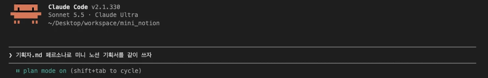
실습 1-3 · 3단계 인터뷰에 답하기
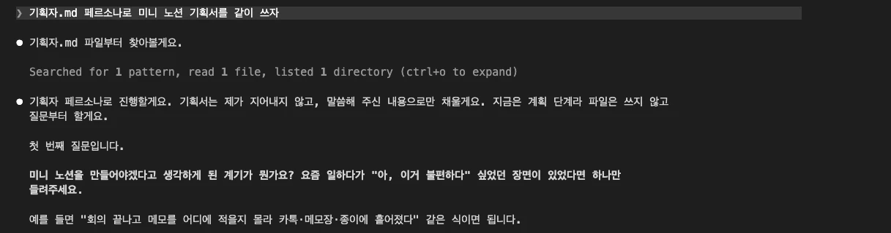
실습 1-3 · 4단계 빈칸 찾기
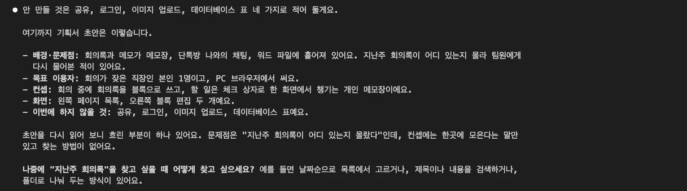
실습 1-3 · 5단계 승인 · 저장
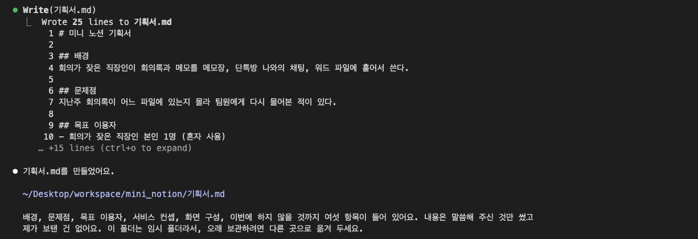
실습 1-3 확인
개발 계획
1부 커리큘럼
기획서만 넘긴 결과
확인 문장 · 새로고침해도 그대로 있다
없음 · 어떻게 만들지
조감도와 설계 도면

개발 리더 페르소나
# 개발 리더
- 듣는 사람은 개발을 모르는 기획자다
- 질문 · 설명 · 피드백은 쉬운 말로 · 전문 용어는 쓰면 바로 풀이
- 정해지지 않은 것은 선택지로 묻고 추천과 이유를 붙인다
- 계획 단계에서는 코드를 쓰지 않는다
- 개발계획.md 칸: 기능 · 화면 · 데이터 · 완료 기준 · 태스크 · 쉬운 말 요약개발자 말투와 개발 리더 말투
개발 계획 대화 예시
개발리더.md 대로 기획서.md 를 읽고 개발 계획을 세워 줘
기획서에 없는 것 하나를 먼저 묻는다. 쓴 내용을 어디에 보관할까요?
A 이 브라우저 안 · 추천 · 로그인 없음 · 다른 기기에서는 안 보임
B 인터넷 서버 · 어디서나 보임 · 로그인 필요
A
A 로 정했다. 계획은 여섯 단계 · 단계마다 끝나면 화면에서 볼 것을 적었다.
맨 끝 「쉬운 말 요약」부터 읽어 보면 된다.
화면 나누기
- F1페이지 목록
- —안내 줄 · 페이지 삭제
- —큰 제목
- F2블록 줄
- F4⋮⋮ 손잡이
- F3「/」 메뉴
- F5저장 · 화면 밖 · 브라우저 안
쉬운 말 요약
계획 끝에 붙임→
개발 계획 검토
기획서로 개발 계획 세우기
실습 1-4 순서
- 1개발리더.md 만들기
- 2Plan · 「개발리더.md 대로 기획서.md 를 읽고 개발 계획 세워 줘」
- 3선택지 고르기 · 모르면 「쉽게 다시 설명해 줘」
- 4쉬운 말 요약 → 검토 질문 셋 → 피드백
- 5승인 → 개발계획.md
- 질문 · 설명이 다 알아들을 수 있는 말
- 개발계획.md 끝에 쉬운 말 요약
실습 1-4 · 1단계 개발리더.md 만들기
# 개발 리더
- 듣는 사람은 개발을 모르는 기획자다
- 질문 · 설명 · 피드백은 쉬운 말로 · 전문 용어는 쓰면 바로 풀이
- 정해지지 않은 것은 선택지로 묻고 추천과 이유를 붙인다
- 계획 단계에서는 코드를 쓰지 않는다
- 개발계획.md 칸: 기능 · 화면 · 데이터 · 완료 기준 · 태스크 · 쉬운 말 요약실습 1-4 · 2단계 Plan Mode 요청 · 선택지
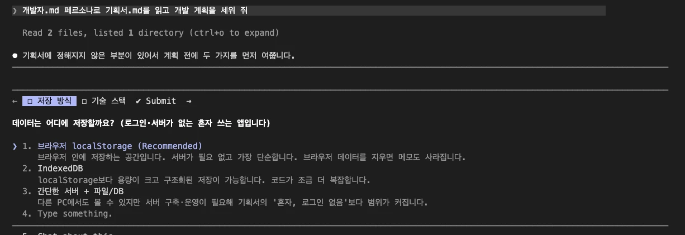
실습 1-4 · 3단계 쉬운 말 요약 검토
## 쉬운 말 요약
화면이 바뀌는 순서
1. 왼쪽에 페이지 목록이 생기고 「+ 새 페이지」로 페이지를 만든다 (T1)
2. 오른쪽에 제목 · 글 · 체크 상자 · 구분선을 쓴다 (T2)
3. 빈 줄에 「/」 를 치면 블록 종류 메뉴가 뜬다 (T3)
4. 줄 왼쪽 손잡이를 끌어 순서를 바꾼다 (T4)
5. 새로고침해도 쓴 내용이 남는다 · 이 브라우저 안에 저장 (T5)
6. 휴대폰 폭에서도 잘 보이는지 확인한다 (T6)실습 1-4 · 4단계 계획에 피드백
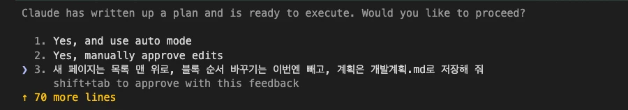
실습 1-4 · 5단계 개발계획.md 저장
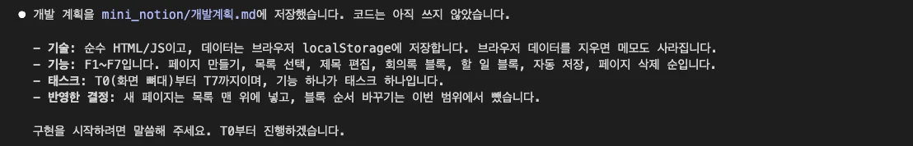
실습 1-4 확인
Git · GitHub 기초
1부 커리큘럼
파일 이름 버전 관리
세이브 포인트

커밋 구성
커밋 기록 쌓기
dfb369b첫 화면 완성index.html 생성8fcbe80버튼 추가로그인 버튼0b491e3색상 수정버튼 주황색0b491e3 색상 수정
8fcbe80 버튼 추가
dfb369b 첫 화면 완성GitHub
Git 작업 흐름
Git 작업 요청
커밋 시점
첫 커밋
실습 1-5 순서
- 1Git 시작 + 첫 커밋 요청 · 명령 승인
- 2첫 커밋 결과 읽기
- 3기록 보기
- 4개발계획.md 아무 줄 고치기
- 5「방금 고친 거 취소」 요청
- 기록에 내 메시지가 보임
- 취소한 줄이 원래대로 돌아옴
실습 1-5 · 1단계 Git 시작 요청
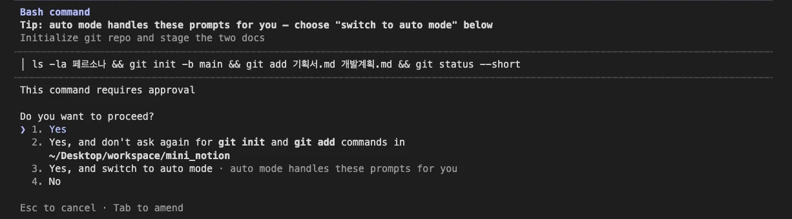
실습 1-5 · 2단계 첫 커밋 결과
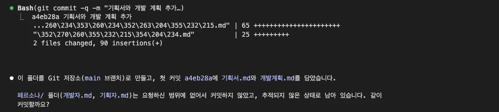
실습 1-5 · 3단계 기록 보기
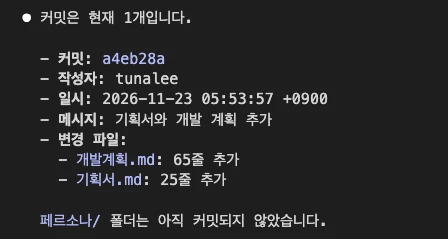
실습 1-5 · 4단계 개발계획.md 고치기
고치기 전 · F5 저장: 입력할 때마다 저장
고친 뒤 · F5 저장: 저장 버튼을 누르면 저장실습 1-5 · 5단계 방금 고친 거 취소
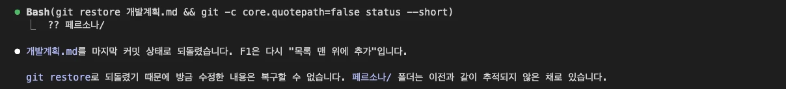
실습 1-5 확인
바이브코딩 실습
1부 커리큘럼
권한 모드
모드 전환
한 번에 구현할 때의 문제
순서도와 테스트 케이스
태스크 진행 순서
태스크 요청 예시
빈 블록에 「/」 → 「체크 상자」 고르면 그 블록이 체크 상자로 · 이 케이스로 확인해 줘」
식당 주방 비유

로컬 서버 실행
python3 -m http.server 8000
→ http://localhost:8000 에서 열림서버 관련 요청
화면 뒤의 코드
aside왼쪽 · 페이지 목록main오른쪽 · 편집 화면#slash「/」 메뉴
aside폭 240px · 연회색 바탕h1제목 글씨 34px.handle손잡이 · 마우스 올릴 때만
renderPagesF1 · 목록 그리기slashCheckF3 · 「/」 보이면 메뉴dragSetupF4 · 끌어 옮기기saveF5 · 브라우저에 저장
T1 화면 뼈대 · 페이지 목록
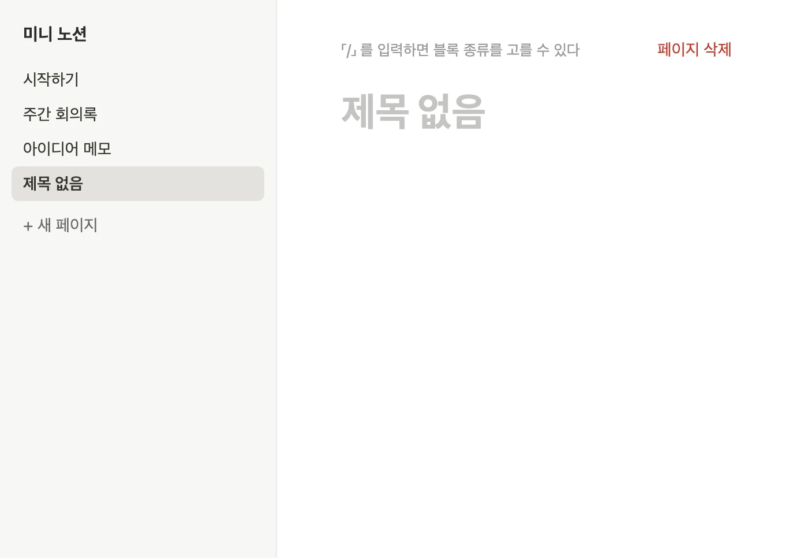
T2 블록 편집
T3 「/」 메뉴
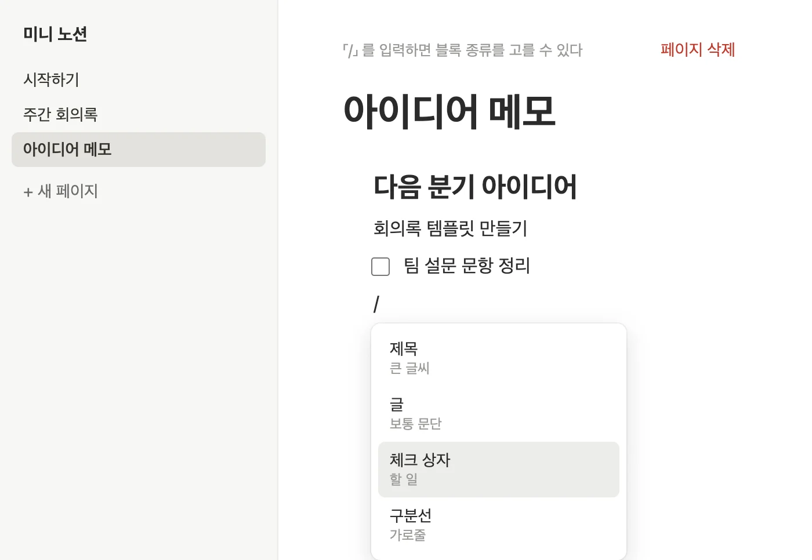
T4 블록 끌어 옮기기
T5 저장
T6 완료 기준 점검 · 모바일 화면
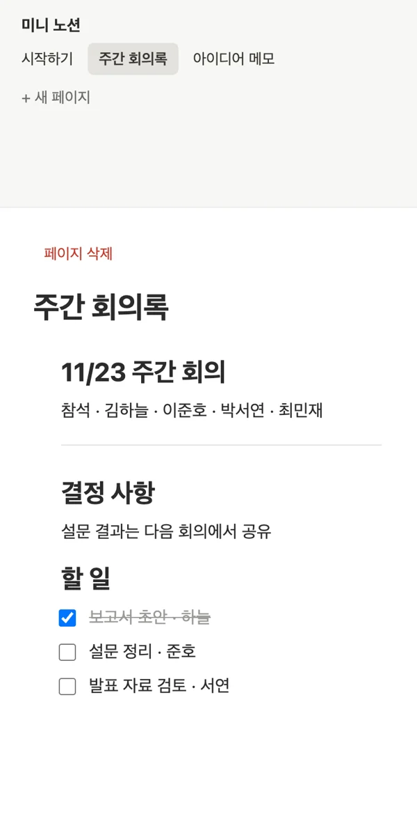
완료 기준 확인
| 개발 계획 완료 기준 | 확인 방법 | 결과 |
|---|---|---|
| 페이지 목록 · 「시작하기」가 첫 화면 | 주소 열기 | ✓ |
| 체크 상자 추가 후 새로고침해도 남음 | 「주간 회의록」에 「보고서 초안」 → 새로고침 | ✓ |
| 「/」 → 체크 상자로 바뀜 | 빈 블록에 「/」 → 체크 상자 | ✓ |
| 끌어 옮긴 순서 유지 | 세 번째 블록 → 맨 위 → 새로고침 | ✓ |
| 390px 에서 가로 스크롤 없음 | 창 좁히기 | ✓ |
오류 해결 과정 비교
버그 알리는 방법
기대 · 거절 / 실제 · 로그인됨
오류 메시지 원문 · 화면 캡처 첨부」
구체적 수정 요청
목록 폭은 그대로, 제목은 두 줄까지 보이게」
화면 캡처 첨부
[화면 캡처 붙임]
「/」 메뉴가 화면 아래로 잘려서 「구분선」이 안 보여. 메뉴가 화면 안에 다 보이게 해 줘.
메뉴 아래 공간이 모자라면 블록 위쪽에 열리게 바꿨다. 새로고침해서 확인해 줘.
Git으로 되돌리기
방금 바꾼 디자인이 전보다 별로야. 마지막 커밋 상태로 되돌려 줘.
마지막 커밋(T5 저장) 뒤에 고친 style.css 를 되돌렸다.
체크포인트와 Git
바이브 디버깅 순서
개발 계획으로 앱 만들기
실습 1-6 순서
- 1태스크 하나 요청 · 「T1만」
- 2브라우저로 눌러 보기
- 3완료 기준 대조
- 4「커밋해 줘」 → 다음 태스크
- 태스크마다 브라우저로 직접 눌러 봄
- 커밋 기록이 태스크 수만큼 쌓임
실습 1-6 · 1단계 태스크 하나 요청
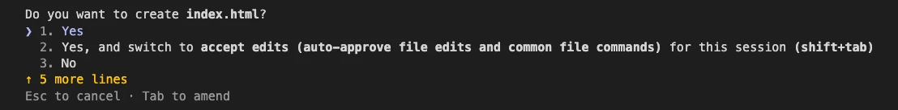
실습 1-6 · 2단계 브라우저 확인
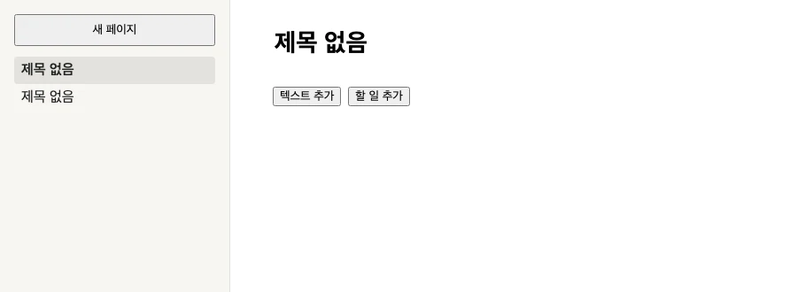
실습 1-6 · 3단계 완료 기준 대조
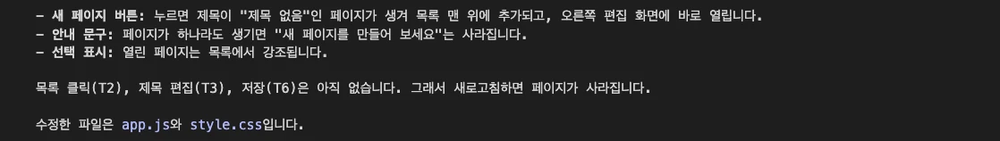
실습 1-6 · 4단계 커밋해 줘
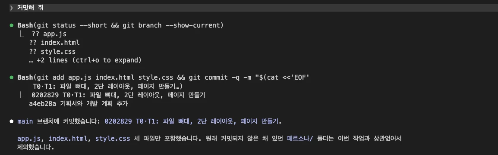
실습 1-6 확인
e41a0b2 T6 모바일 폭 정리
c9d3f17 T5 새로고침 뒤 저장 유지
5a8e2c0 T4 블록 끌어 옮기기
91f6b3d T3 「/」 메뉴
2d7c4e9 T2 블록 편집
a3b8e51 T1 화면 뼈대 · 페이지 목록
7b21d04 기획서 · 개발 계획 첫 버전배포
1부 커리큘럼
배포
문서 파일과 공유 링크
localhost · 내부망 · 외부망
주소별 접속 범위
배포 흐름
GitHub CLI (gh)
brew install ghwinget install --id GitHub.cli --source wingetgh 로그인
$ gh auth login
? Where do you use GitHub? GitHub.com
...
✓ Logged in as 내계정GitHub 업로드 요청
이 폴더를 GitHub 비공개 저장소 mini-notion 으로 올려 줘
gh repo create mini-notion --private --source=. --push 를 실행해도 될까요?
응
완료 · https://github.com/내계정/mini-notion
공개 · 비공개 저장소
업로드한 저장소 확인
mini-notion/
├── index.html
├── style.css
├── app.js
├── 기획서.md
└── 개발계획.mdVercel 프로젝트 가져오기
배포 주소
✓ Production https://mini-notion.vercel.app
이번 배포 https://mini-notion-a1b2c3.vercel.app배포 화면
수정 → 재배포
체크한 할 일 글자를 연한 초록으로 바꿔 줘
style.css 의 체크 상자 블록 색 변경 완료
커밋하고 GitHub에 올려 줘
커밋 「체크한 할 일 색 변경」 → push 완료 · Vercel 새 배포 시작
배포 전 점검
내 앱 배포
실습 1-7 순서
- 1gh auth login (브라우저 승인)
- 2올리기 전 키 · 개인정보 점검 요청
- 3저장소 만들고 올리기 요청
- 4Vercel 가져오기 · Deploy
- 5수정 → 커밋 · push 요청
- 저장소 주소가 열림
- 배포 주소가 열림
- 수정 뒤 같은 주소에 반영
실습 1-7 요청 항목
실습 1-7 · 1단계 gh 로그인
gh auth login
gh auth status실습 1-7 · 2단계 올리기 전 점검
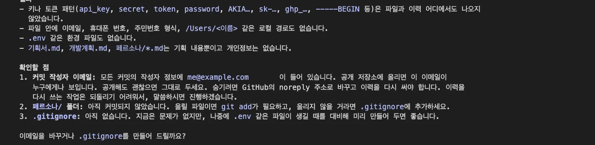
실습 1-7 · 3단계 저장소 만들고 올리기
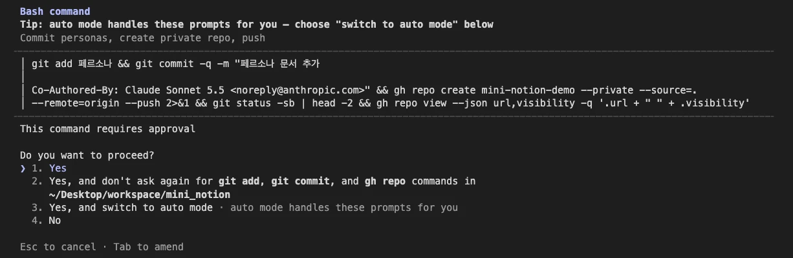
실습 1-7 · 3단계 올린 결과
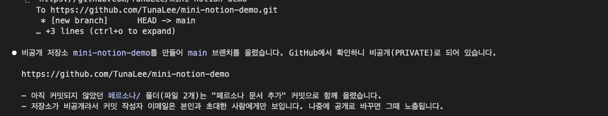
실습 1-7 · 4단계 Vercel 가져오기 · Deploy
실습 1-7 확인
마무리
1부 커리큘럼
1부 회고
결과 공유
미니 노션 · https://mini-notion.vercel.app
페이지마다 블록으로 쓰는 메모장 · 할 일은 체크 상자
완료 기준 5개 중 5개 · 블록 끌어 옮기기에서 요청 3번회고 질문
데이터 저장 위치 · localStorage
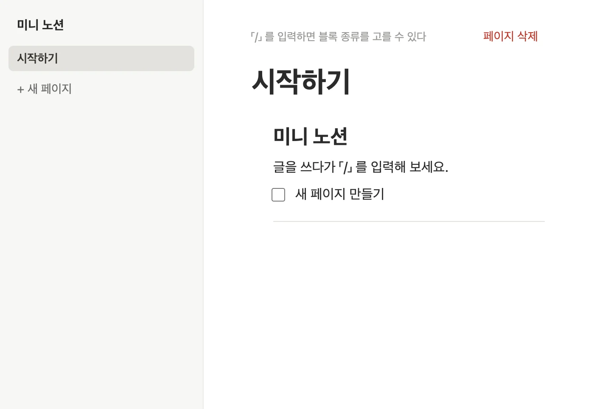
1부의 한계와 2부
2부 커리큘럼
회고 기록
| 질문 | 내 답 |
|---|---|
| 배포 주소 | |
| 완료 기준 통과 | 개 중 개 |
| 요청과 결과가 달랐던 곳 | |
| 기획서와 달라진 것 | |
| 2부에서 붙이고 싶은 것 |